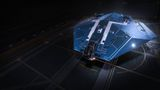

Max jump (engineered)
~54 LY
The Asp Scout is the lighter, cheaper sibling of the Asp Explorer: a medium-pad hull with a decent engineered jump range, seven optional internals for a full expedition kit, and no rank gate. It ranks mid-pack because its FSD and internals are a step down from the Explorer, and even the cheaper small-pad DBE out-ranges it — the Scout's case is purely price and medium-pad access.

This ship's 1–100 suitability rating reflects its fully-engineered fit for this role, scored against every ship in the role. See how ships are rated.
The Asp Scout lives in the shadow of one of exploration's most beloved ships, the Asp Explorer — and that's a shame, because on its own terms it's a tidy, affordable medium explorer. Lighter and cheaper than its famous sibling, it offers a decent ~54 LY engineered range, seven optional internals for a proper expedition kit, and a medium pad that lands at most stations.
It is, admittedly, the lesser Asp. Its FSD and internals are a step down from the Explorer's, so it jumps a little shorter and carries a little less, and the Explorer's superior range and famous canopy view make it the obvious choice for most. But the Scout costs markedly less, and for a budget commander who wants a medium-pad explorer with real kit at a low price, it's a quietly sensible pick that does the job without fuss.
Affordable medium-pad exploration: cost-conscious expeditions, exobiology, and a roomier-than-small explorer for a commander who wants medium-pad capacity without the Asp Explorer's price.
Four things make the Asp Scout a sensible budget medium explorer:
It's the lesser Asp: a step down in FSD, range, internals and the Explorer's celebrated canopy view, with only two utilities and a slower hull. The Asp Explorer is a clearly better explorer for not a great deal more, and the premium mediums outclass both. The Scout's case is purely price — a cheaper route to a capable medium-pad explorer.
A cheap, light 150 t medium-pad explorer with a full seven-optional kit and no rank gate, held to 70 by a modest ~54 LY range that even the small-pad DBE beats.
The 70/100 headline is a verdict against the exploration role's priority-ordered factors. Each factor carries a weight (its share of 100); this hull earns part of each based on how it performs against the whole field. The points sum to the rating.
| Role factor | Score | Why this score |
|---|---|---|
| Engineered jump range | 22/35 | Engineered ~54 LY on a Class-4 FSD with Guardian booster is respectable but mid-field at best — the Asp Explorer reaches ~62, the small-pad DBE ~68, the Krait Phantom ~75 and Mandalay ~85. Range is the clear limiter. |
| Heat profile | 11/15 | 150 t light hull with a D-rated, G5 Low Emissions power plant runs cool enough for safe scooping; solid but not class-leading — the Dolphin and Diamondback Scout run cooler still. |
| Fuel tank & reach | 7/10 | Class-4 fuel tank feeds a Class-5 fuel scoop, giving a couple of jumps between refuels and fast restocks at any star — ample reach for a ~54 LY hull. |
| Canopy & visibility | 7/10 | Bubble-style canopy gives good forward and side sightlines for scanning, but it falls short of the Asp Explorer's celebrated wraparound view that defines the top of this field. |
| Internals | 14/20 | Seven optionals (5·4·3·3·2·2·1) carry scoop, Guardian booster, AFMU, SRV bay, DSS and landing shield — a complete kit, though a step below the Explorer's larger slots and with zero military slots and only 2 utilities. |
| Comfort & cost | 9/10 | ~3.82M Cr hull, ~14M Cr all-in engineered, no rank or permit gate, with medium-pad access to most stations — among the cheapest routes into a fully-kitted medium explorer. |
| Weighted total | 70/100 | Matches the headline suitability rating for this ship in this role. |
Weights are an editorial decomposition of the role's stated priority order — not an in-game formula. Bar length shows how fully each factor is earned; the longest factors carried the score, the shortest are where it gave points away. See how ships are rated.
Both tables rate ships for exploration specifically. The role column is the maximum engineered jump range in light-years — the headline number for deep-space travel.
| Ship | Class | Max jump (LY) | Pros & cons vs Asp Scout | Rating |
|---|---|---|---|---|
| Mandalay | Medium | ~85 | Far greater range; modern; roomyMuch pricier | 96 |
| Krait Phantom | Medium | ~75 | Premium range plus full kitFar pricier | 93 |
| Asp Explorer | Medium | ~62 | More range; superb visibility; roomierPricier | 86 |
| Python | Medium | ~45 | Roomier; multi-roleShorter range; heavy; pricier | 75 |
| Asp Scout this | Medium | ~54 | — this hull (baseline) | 70 |
| Type-6 Transporter | Medium | ~48 | Cheaper; decent cargoSlower; less specialised | 68 |
Among medium explorers the Asp Scout is the budget option. Its own sibling the Asp Explorer beats it on range, room and that famous view for not much more, so the Scout makes most sense purely on price — a cheaper way into a capable medium-pad explorer.
| Ship | Class | Max jump (LY) | Pros & cons vs Asp Scout | Rating |
|---|---|---|---|---|
| Krait Phantom | Medium | ~75 | Premium range and capacityFar pricier | 93 |
| Diamondback Explorer | Small | ~68 | More range; cheaper; lands anywhere; coolSmall pad; less capacity | 88 |
| Asp Explorer | Medium | ~62 | The obvious upgrade — more of everythingPricier | 86 |
| Dolphin | Small | ~58 | Coolest-running; comfortable; cheaperSmall pad; less capacity | 80 |
| Diamondback Scout | Small | ~55 | Cheaper; cool-runningSmall pad; tighter internals | 74 |
Curiously, the cheaper small-pad DBE out-ranges the Asp Scout and lands anywhere — so the Scout's main justification over a DBE is medium-pad capacity. Against its own sibling, the Asp Explorer is simply the better explorer for a little more. The Scout is a value-and-pad pick, not a range pick.
At ~3.82M Cr the Asp Scout is cheap for a medium, with no rank gate. A full exploration fit brings it to around 14M Cr all-in — a capable medium-pad explorer for modest money.
It's a value pick. The Asp Explorer is the better ship for not much more, so the Scout makes most sense when budget is tight but a medium pad and decent capacity are wanted over a small-pad DBE.
Around 14M Cr all-in for a capable medium-pad explorer — cheaper than the Asp Explorer, though the Explorer is the better ship for a little more.
A tidy medium-pad explorer fit. Initial is buy-only; A-rated is the expedition baseline; Engineered maximises range within the Scout's modest frame.
| Slot | Initial · buy-only | A-Rated · no eng | Engineered | Notes |
|---|---|---|---|---|
| Utility Mounts | ||||
| Utility 1 | 0I Heat Sink Launcher | 0I Heat Sink Launcher | G1 Ammo Capacity (no experimental effect) | Optional / low-priority — Ammo Capacity adds heat-sink charges. Dumps heat for silent running and Thermal-Vent resets. |
| Core Internals | ||||
| Bulkheads | Lightweight Alloy | Lightweight Alloy | G5 Lightweight (no experimental effect) | |
| Power Plant | 4E Power Plant | 4D Power Plant | G5 Low Emissions + Thermal Spread | D-rated to save mass; Low Emissions runs it cold for safe scooping close to a star. |
| Thrusters | 4E Thrusters | 4D Thrusters | G5 Clean Drive Tuning + Double Braced | D-rated for mass; Clean Drive Tuning keeps the thrusters cool and efficient on the long haul. |
| Frame Shift Drive | 4E Frame Shift Drive | 4A Frame Shift Drive | G5 Increased Range + Mass Manager | A-rate this first — Increased Range plus Mass Manager is the whole jump-range case for the Scout. |
| Life Support | 3E Life Support | 3D Life Support | G5 Lightweight (no experimental effect) | D-rate and go Lightweight to shed mass; life support has no experimental effect. |
| Power Distributor | 4E Power Distributor | 4D Power Distributor | G3 Engine Focused + Stripped Down | D-rated; Engine Focused gives enough engine cap to boost, Stripped Down trims the mass. |
| Sensors | 4E Sensors | 4D Sensors | G5 Lightweight (no experimental effect) | Drop to D and go Lightweight — exploration needs no sensor range, so save the mass for jump range. |
| Fuel Tank | 4C Fuel Tank | 4C Fuel Tank | (No blueprint available) | Stock class-4 tank — a couple of jumps between scoops; fuel capacity cannot be engineered. |
| Optional Internals | ||||
| Size 5 | 5E Fuel Scoop | 5A Fuel Scoop | G5 Shielded (no experimental effect) | Optional / low-priority — Shielded hardens the scoop; scoop rate is unchanged. Refuels from stars. |
| Size 4 | — | 4H Guardian FSD Booster | (No blueprint available) | Guardian FSD Booster adds a flat range bonus to every jump; needs a Guardian-site run and cannot be engineered. |
| Size 3 | — | 3A AFMU | G5 Shielded (no experimental effect) | Optional / low-priority — Shielded hardens the AFMU. Repairs modules between fights. |
| Size 3 | — | 2G Planetary Vehicle Hangar | (No blueprint available) | Planetary Vehicle Hangar — a size-2 SRV bay under-fills the size-3 slot for surface mapping and exobiology. |
| Size 2 | — | 2C Bi-Weave Shield Generator | G5 Enhanced Low Power + Lo-Draw | Light bi-weave for landings only; Enhanced Low Power with Lo-Draw keeps mass and power minimal. |
| Size 1 | — | 1I Detailed Surface Scanner | G5 Expanded Probe Scanning Radius (no experimental effect) | |
| Open in planner / Export | ||||
| Open in Coriolis | open | open | open | One-click open at coriolis.io. |
| Open in EDSY | open | open | open | One-click open at edsy.org. |
| Copy SLEF | Copies the raw Ship Loadout Export Format for that state. | |||
The Scout's seven optionals carry a class-5 scoop, Guardian booster, SRV bay, AFMU and scanner — a full expedition kit, just with less range and redundancy than the Asp Explorer. Tidy and sufficient for cost-conscious trips.
Buy the hull (~3.82M Cr) and fit only the cheap essentials: a stock 5E Fuel Scoop in the size-5 slot, the buy-only E-rated core internals (the FSD stays stock 4E for now), the stock 4C Fuel Tank, and a 0I Heat Sink Launcher for heat dumps. The hull's default Lightweight Alloy bulkheads are the right plating for an explorer — lowest mass, no spend.
Leave the rest empty at this stage — the Guardian FSD Booster, AFMU, SRV bay, Detailed Surface Scanner and landing shield all wait for the A-rated pass.
No weapons; the lone heat sink is all the utility this state carries.
A-rating priority for a budget medium explorer:
A full A-rated, lightly engineered Asp Scout is a capable medium explorer for modest money — the Asp Explorer is better, but costs more. With the scanner sized correctly, one size-2 internal is left empty to keep the ship light.
The exploration engineering pattern. Felicity Farseer (maxed) carries the FSD; Professor Palin (or Mel Brandon) handles the Clean Drive Tuning thrusters; pin blueprints for remote G1→G5 application.
| Module | Blueprint | Experimental | Engineer |
|---|---|---|---|
| Frame Shift Drive (4) | Increased Range (G5) | Mass Manager | Felicity Farseer |
| Thrusters (4) | Clean Drive Tuning (G5) | Double Braced | Professor Palin / Mel Brandon |
| Power Plant (4) | Low Emissions (G5) | Thermal Spread | Hera Tani |
| Life Support (3) | Lightweight (G5) | — | Etienne Dorn |
| Sensors (4) | Lightweight (G5) | — | Bill Turner / Juri Ishmaak |
| Power Distributor (4) | Engine Focused (G3) | Stripped Down | The Dweller |
| Shield Generator (2) | Enhanced Low Power (G5) | Lo-Draw | Lei Cheung |
| Shield Booster | Heavy Duty (G5) | Super Capacitors | Didi Vatermann |
| Bulkheads | Lightweight (G5) | — | Selene Jean |
Light — standard exploration blueprints on modest medium modules; the Guardian FSD Booster needs a Guardian-site run. With a complete inventory this is spend, not farm. Ask for exact per-blueprint counts if needed.
Approximate progression across the three states (figures are representative, not exact rolls):
| Stat | Initial | A-rated | Engineered |
|---|---|---|---|
| Max jump (LY) | ~30 | ~40 | ~54 |
| Module space | modest | modest | modest |
| Pad access | medium | medium | medium |
| Speed (boost) | 304 m/s | 304 m/s | ~340 m/s |
| Cost-efficiency | good | good | good |
Engineered, the Asp Scout jumps ~54 LY with a complete (if modest) expedition kit on a medium pad, for low money. Stock Lightweight Alloy bulkheads (Lightweight Armour G5) keep plating at minimum mass, and dropping the shield booster for the 2C bi-weave alone trims utility weight — every kilo is range. The Asp Explorer does it all a little better for a little more; the Scout's pitch is purely the lower price.
Any deep-space target suits it. From your home base it reaches expedition start points in a handful of jumps — a budget medium for the journey.
The Asp Scout is the forgotten middleweight: a cheap, light, medium-pad explorer with a decent range and tidy kit, forever overshadowed by its celebrated sibling. The Asp Explorer is the better ship for a little more, and even the small-pad DBE out-ranges it — but as a low-cost route to medium-pad exploration, the Scout quietly does the job.
Figures on this page are verified against the sources below.